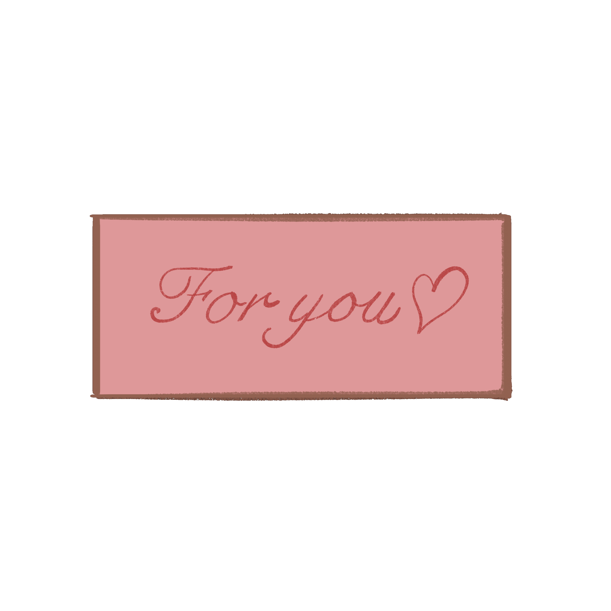

Continued...
I'm so thankful that you came into my life and, most importantly, that you stayed for an entire year. Sa tanan nga tawo sa kalibutan, ikaw ang akong gipili, ug thankful kaayo ko nga ikaw pud ang nagpili nako. Thank you for loving me, for being patient with me, and for staying even when things weren't always easy for us. I know nga dili perfect ang atong relasyon. Naa tay mga away, misunderstandings, ug mga panahon nga kapoy na ta, pero bisan pa sa tanan, we still choose each other. And that's what makes our love so special to me. I'm sorry for my mistakes, love, and I promise to keep learning and becoming better for you and for us. 🥹❤️ Salamat kaayo kay niabot ka sa akong kinabuhi, ug mas labaw pa, salamat kay nagpabilin ka. You became one of the most beautiful parts of my life, and I hope nga dili lang kutob sa one year ang atong storya. I want more memories, more anniversaries, and more years with you. Happy Anniversary, palangga! Ikaw gihapon ang akong pilion karon ug sa umaabot. I love you so much, and I'm always grateful that I have you. Here's to more years of loving each other.